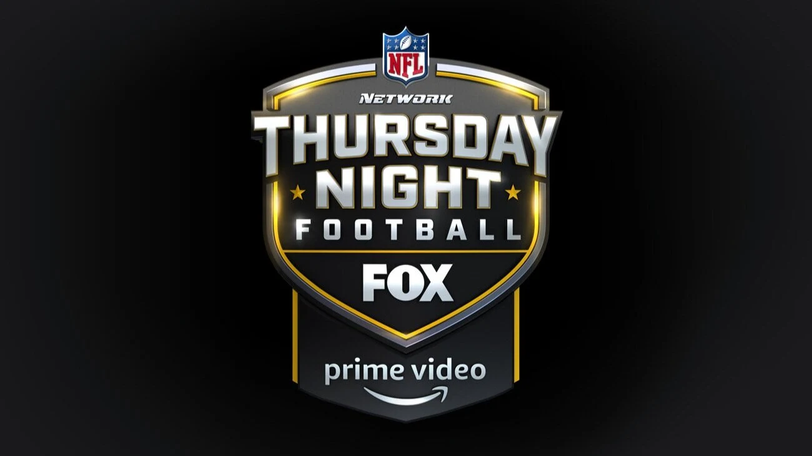
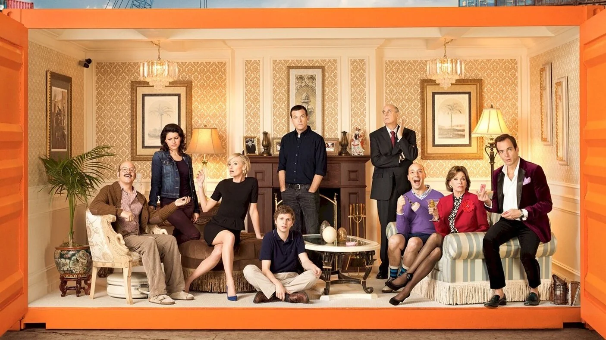
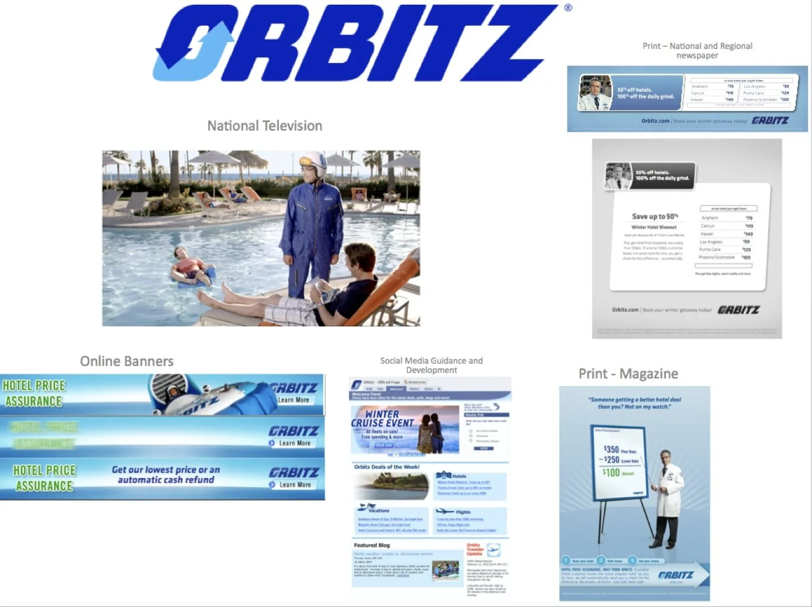
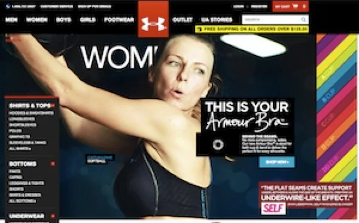

Rob Rolfe
Creative & marketing leadership.
Entertainment · Tech · Sports · Consumer brands
View all workThe work.
Brand building. Platform launches. Campaigns that bring people in.

Thursday Night Football
Sports / Prime VideoJack Ryan
Entertainment / Prime Video
The Grand Tour
Entertainment / Prime Video
Netflix
Entertainment / Tech / Netflix
Prime Video Sports
Sports / Prime Video
Arrested Development
Entertainment / Netflix
Orange Is the New Black
Entertainment / Netflix
MINI
Consumer brands / MINI
Volkswagen
Consumer brands / Volkswagen
Orbitz
Tech / Consumer brands / Orbitz
Under Armour
Consumer brands / Sports / Under ArmourNo projects match that search. Try a title, brand, or another category.
Creative ambition.
Business instinct.
I’m Rob Rolfe. My work connects the business problem, the audience insight, and the creative idea—then carries that idea through launch.
Across Netflix, Prime Video, and consumer brands, I’ve helped introduce new ways to watch, built campaigns around passionate fanbases, and brought products to market across digital, television, retail, and the real world.
Find the story.
Turn an audience insight into a clear strategic idea.
Build the campaign.
Connect creative ambition across channels and touchpoints.
Carry it through.
Bring strategy, creative teams, and production together for launch.